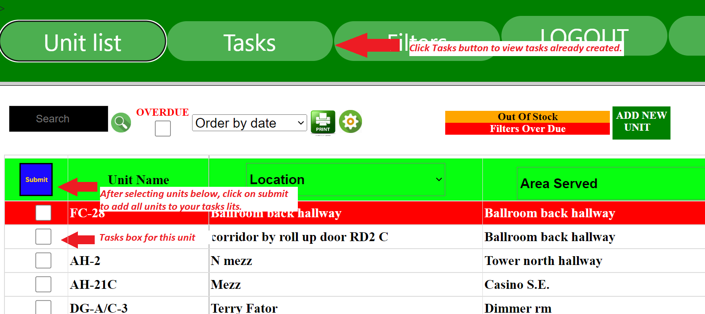
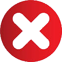

The purpose of creating Tasks is to group units together. Advantages are:
Filter change for that unit is assigned in your name and so others can see this in the unit list.
You can print them out and carry information needed to change units like unit location, filter sizes etc..
Tasks can be used for 1 or more units at a time.
Creating a tasks:
To add a unit to your tasks list check the box next to the unit name in the Unit List
You can select as many as you want. Then click on the submit button. See illustration below.

Viewing your task list:
Click on the Tasks button on top to reveal your tasks. See example below.
Tasks table example below:
Cancel task
Unit name
Unit location
Filter size
Filter type
Complete task
Air Handler #21
Mezz level door #2
24x24x2
A/C #1b
Roof of building 2
14x12x1
Cancel a task by clicking on the cancel task icon.
Complete a task by clicking on the complete task icon.
Completing a task will do two things: 1) It resets the date of the next filter due date ahead by the number of months derived from the rotation number. 2) It adjusts the filter inventory to reflect the amount and size of the filters that were used in the task.